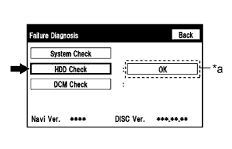

NAVIGATION SYSTEM (for HDD) > Current Position Display does not Appear |
| 1.CHECK HARD DISK DRIVE (OPERATION CHECK) |
|  |
Enter the "Failure Diagnosis" screen (Click here).
Select "HDD Check" and check the result.
| *a | Result |
|
| ||||
| OK | |
| 2.CHECK CABIN |
Check that condensation is not likely to occur in the cabin, and that the temperature is not high or extremely low in the cabin.
|
| ||||
| OK | ||
| ||